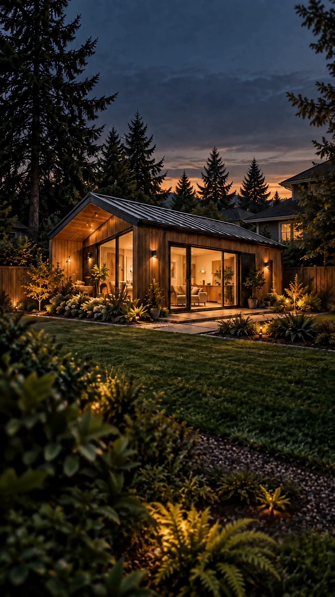

Walk Your Space
Taking in All the Possibilities.

A silent architectural concept animation, edited in CapCut. House layers assemble into a finished ADU. Playback stops on the finished house.
Buckley · Enumclaw · the plateau
Designed, permitted and built right here.
A backyard home for your parents, your grown kids, or a renter. Built on your lot, permitted where you live.
What we build
Where Creative Thinking Meets Vast Industry Experience.
* Here are some examples. These are examples, not restrictions. The only limit is your imagination!
Tap a bubble
A new wing on the house with its own entrance. Shares a wall, not a life.
Where we work
Home base is Buckley. If your lot is inside the ring, we'll come walk it.
TapClick a town

How it goes
Jared handles the lot walk, the design and permits, the build, the keys. One person, one number to call.
Taking in All the Possibilities.
Funneling Thoughts and Dreams to Function.
Putting the design and permit details together.
Turn the plan into a real place to live.
Keys in Hand, Enjoy!